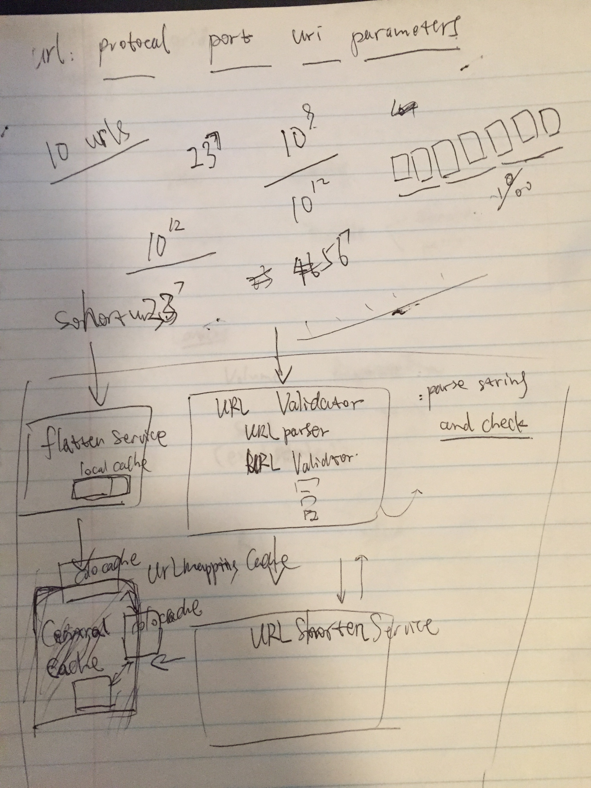

<!DOCUMENTTYPE html>
<html>
<head>
    <title>May 25, 2015</title>
</head>
<body>
<ol>
    <li>
        Design a URL shortening service like bit.ly
						<pre>
Problem solving methodology
Start with (key) questions
Write down test cases
Solution part
Giving out my thinking
Write down general steps
Start from naive solution
How to optimize time and space?
Code according to the above framework
Manually testing, error correction and enhancement

3:00pm - 3:30pm

Key questions
1. how many possible different urls? 1M
2. same url different times: same
3. invalid url
4. expected output?
5. uniqueness requirement: collision possibility. overall 0.1%, per user: almost never
6. expected length of output url? depends on 5 and 1, 7 bits [a-zA-z0-9], collision possibility: 0.1%
7. expiration?
8. different colos
9. redis: synchronization of set?

User cases:
1. shorten url
2. qps/latency: how to guarantee low latency of different colos
a. use colo cache, and sync cache for the <key, value> (asynchronously)
b. use redis (do not need to handle synchronization at application layer), any other choices?
<a href="http://stackoverflow.com/questions/19477821/redis-cache-vs-using-memory-directyly">Redis cache vs using memory directyly</a>
<a href="http://stackoverflow.com/questions/10558465/memcached-vs-redis">Memcached vs Redis</a>

Functions:
1. validate url
2. shorten url
3. short url flatten


Solution
<figure>  <figcaption>URL Shorten System<br />
</figcaption> </figure>
I. my solution
1. validator: standard
a. parse url, and then validate each parts
2. shorten service
3. flatten service

a. naive method
i. divided input string into 7 groups
ii. for each group, hash it to index 0-55, assign corresponding letter
iii. save <key, value> to cache with expiration
iv. pros and cons
1. pros: easy;
2. cons:

II.
<a href="http://highscalability.com/blog/2014/7/14/bitly-lessons-learned-building-a-distributed-system-that-han.html">Bitly: Lessons Learned Building A Distributed System That Handles 6 Billion Clicks A Month</a>
<a href="http://devslovebacon.com/conferences/bacon-2014/talks/lessons-learned-building-distributed-systems-at-bitly">Talks</a>

Point of attentions

Key points

Refinement
</pre>
    <li>
</ol>
</body>
</html>

